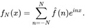

Convolutional Neural Network ( CNN)
We have a lot of good material out there describing the workings of a Neural network. Infact http://neuralnetworksanddeeplearning.com/index.html tells us how handwritten digits are recognized by a fully connected Neural network. What if we extend it to languages especially ethnic ones like Indic or Middle eastern scripts . How far a fully connected neural network would continue to predict with minimal error . Things take a wild turn if we feed a large image to an FC as each pixel becomes an input to a neuron , the training would especially heave and puff owing to huge volume of hyper parameters. A skewed image or text will also test an FC NN’s capacity to converge and predict accurately.
Feature
Extraction through Convolution
When resource usage , overhead and performance is of paramount without trading off accuracy, it is important to feed information that is only sufficient for an FC to work its magic. That can be accomplished by extracting the important features from an image and discarding all the other data deemed unimportant for an NN. At the same time, a less common pattern should not throw the neural network off the curve , say for example a cursive writing or a skewed image . Hence we need a mechanism that will enable both feature extraction and pattern matching .
Yann Lecun , who’s
currently heading Facebook’s AI in early 90s came up with an architecture that
became the foundation of Convolutional Neural network and developments in
Computer Vision. He allowed a filter
martix ( also called kernel) carrying a certain
pattern to stride through the image pixel matrix to find out the presence of a
certain pattern. The filter acted like a lens recognizing patterns/ features
wherever they are on an image - making this specialized architecture shift and distortion invariant . Lecun used handwritten zipcodes
from US postal service , to put his network LeNet 1
through to test. 
Shown here , is a kernel that has negative weightage on 4 sides of the central cell of a 3 x 3 matrix. The effect as we can see of the filter striding on a single cell padded matrix is edge sharpening while the central pixels are relatively dimmed.
This process of convolving the input image by a filter is called convolution and the Output is called feature / activation map . One can use as many filters depending on the number of features to be checked for.
Pooling is another technique to downsize the number of parameters flowing to
and fro in a network. Out of a cross section ( say 4 x 4 ) , pooling either
chooses to output the maximum value of a pixel or the average value of all
pixels in the cross section . Max pooling shown here.
A typical convolutional network will be interlayered with convolutional and pooling layers as shown below ( from https://towardsdatascience.com/light-on-math-machine-learning-intuitive-guide-to-convolution-neural-networks-e3f054dd5daa )
Fourier
Series and Digital Signal and Image Processing
The concept of convolution can be seen from signal processing. In early 19th century , the French mathematician and physicist Joseph Fourier noticed that the heat dissipation of a metal can be established by the sum of a series of sine and cosine waves. In other words, any arbitrary distribution/continuous function can be decomposed into simpler representations of sine and cosine waves. Fourier himself may not have foreseen the range of applications his discovery has impacted like engineering, image and signal processing, quantum mechanics etc.

This figure beautifully captures how higher frequencies ( rotation of the hand inside the circle and smaller the circle,higher the frequency) can transform a top of simple sine wave to almost a square wave. We also see that how different frequencies work in tandem to create each function - as the number of terms increases so is the approximation to square signal improving.
This representation here is key to Fourier transform which is used in many engineering applications .Fourier transform of a function in time series ( sqaure wave) decomposes to its harmonics ( frequency domain) . The equation below is a Discrete Fourier approximation ,where is the harmonic coefficient

Infact, FFT algorithm ( Fast Fourier Transform ) used in image and video processing is centered on the symmetricity of this equation .
Discrete
Cosine Transform (DCT)
DCT is a fourier related transform , where it considers only the real part (Cosine) unlike a Fourier transform which has complex plane calculations as well () . This algorithm is widely used in lossy compressions ( where approximation is sufficient ) like image or video compressions like jpeg or video streamlining. It takes advantage of the fact that an entire energy scape can be coded with just handful of harmonics and then can be rebuilt to an approximation of the original from these downsampled vector of harmonics.
DCT rests on the fact that higher frequencies are less noticeable to the human eye and that it is lower frequencies that contribute more. Examining the steps of a DCT in compressing an image, we can see how convolution allows feature mapping.
- A picture in RGB ( Red Green and Blue Channels) is considered in terms of Luminosity and Chrominance. Transformation is done on Luminosity as that attribute determines the impact a pixel value has on human eyes. ( Pixel value ranging from 0 - 255 ) . In order to center it around 0 , the pixel values are shifted by -128 .
- Transform - Divide the picture in to 8 x 8 pixel slices. Each slice is then compared with an 8 x 8 matrix of frequencies increasing from left to right and from top to bottom , to see how much impact each frequency has on each cell .(https://www.edn.com/electronics-news/4164456/Baseline-JPEG-compression-juggles-image-quality-and-size) .
The coefficient block tells the contribution of each frequency to that 8 x 8 block.
- Quantization - A quantization table is used to divide each cell value in the coefficient block to bring down the values . Higher frequency values after this step would be close to zero which are discarded as they wont visually impact the picture.
- Encoding - Usually Huffman coding which codes the values in a zig zag manner to take advantage of pixel correlation of a continuous toned picture. Most of these high frequencies are discarded and taken into consideration only the 10 blocks on the top left corner.
Augmenting
a CNN with DCT
Now that we have seen the gist of DCT and how convolution is used after converting a picture to frequency domain , perhaps it would be interesting to use DCT along with CNN to converge the network faster. Training such a network would be costly as DCT operation has to be performed on each 8 x 8 block. But if we can parallelize the operations on multiple GPUs, this can be overcome. This paper https://projet.liris.cnrs.fr/imagine/pub/proceedings/ICPR-2016/media/files/0786.pdf shows a study where they found DCT being used at the top of the network giving better accuracy than CNN by itself or DCT applied at the end of a CNN . An FFT/DCT along with CNN would make much difference in performance when it comes to large images. This is definitely something I’ll attempt myself in future.